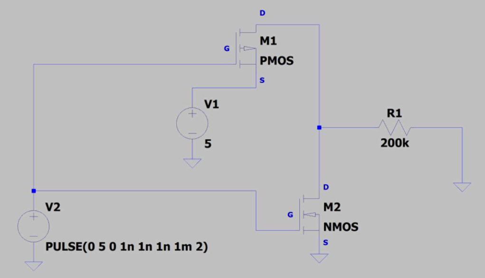
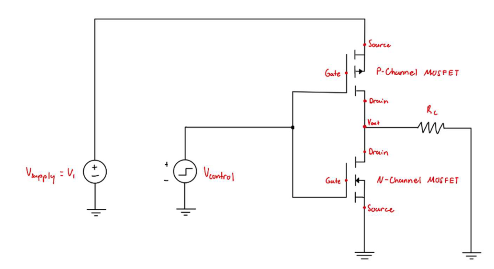
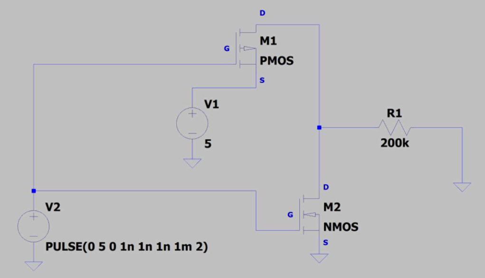
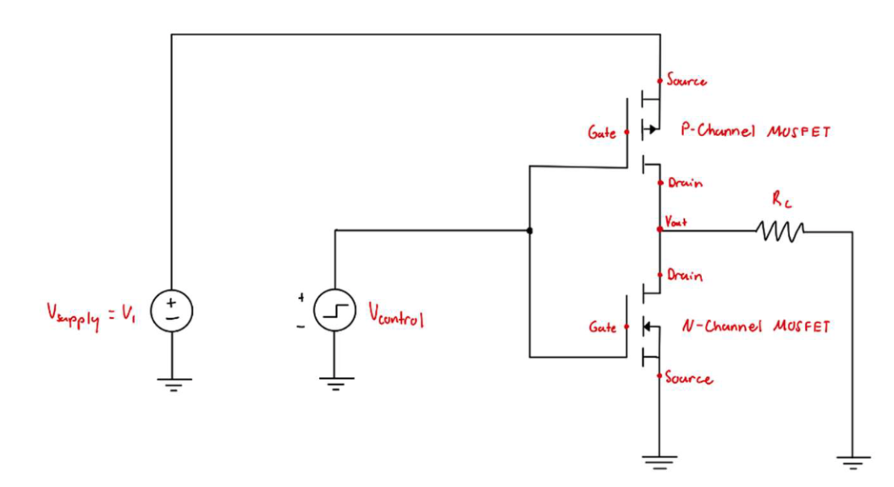

Developed an autonomous robot that navigates a maze, detects room entry, and extinguishes flames using a mounted fan. Designed and fabricated custom PCBs, assembled circuits, and integrated multiple sensors with real-time feedback on an LCD display.
Skills:
Integration of linear/rotary encoder sensors.
Implementing Optoelectronic and Spectral Sensitivity Detectors.
LCD display for real-time sensor data visualization.
PCB design and soldering.
Motor control for differential drive (two-wheel system).
Wall-following and line-counting algorithms for maze navigation.
PIC Microcontroller Programming.
Wiring sysetms together and troubleshooting circuits.
Designed and built a 3D spatial mapping system using a VL53L1X Time-of-Flight sensor mounted on a stepper motor and controlled by an MSP-EXP432E401Y microcontroller. The system generated real-time distance maps, transmitted data via UART for visualization, and used onboard LEDs to indicate system status during operation.
Skills:
C programming on MSP432E401Y (interrupts, GPIO, UART, I²C)
VL53L1X ToF sensor integration + data acquisition
Stepper motor control with ULN2003 driver
Custom hardware wiring + power management
Python (PySerial, NumPy, Open3D) for data processing + visualization
3D point cloud generation + interactive mesh rendering
Testing + validation against real-world hallway scans
Built an object-oriented C++ implementation of the Snake game with modular classes, dynamic memory management, and real-time controls. Implemented randomized food generation, snake growth and scoring, collision detection, and wraparound movement while applying clean OOD principles and testing practices.
Skills:
Object-oriented design: encapsulation, composition, modular class structure
Real-time input handling with MacUILib
Snake movement algorithm using custom array list
Randomized food generation and scoring system
Collision detection and game-over conditions
Dynamic memory management (Rule of Six / Minimum Four)
Built and tested a CMOS XOR gate at the transistor level using two CD4007 chips.
Verified functionality with digital I/O, characterized voltage transfer levels,
and measured timing performance with a capacitive load.
Skills:
Transistor-level digital circuit design with CMOS logic
Applying PMOS/NMOS sizing principles
Breadboard prototyping with CD4007 MOSFET arrays
Functional, static level, and timing performance testing
Using Analog Discovery 3 for digital I/O and oscilloscope analysis
Designed, simulated, and built a single-transistor amplifier to drive a 100 Ω load
with less than 10% attenuation. Verified gain, linearity, and signal fidelity using
LTspice simulations and oscilloscope measurements.
Skills:
Analog circuit design with MOSFETs or BJTs
Selecting and justifying amplifier topologies
Simulation of amplifier behavior (DC, transient, frequency response)
Breadboard prototyping with limited supply rails
Measuring gain, linearity, and fidelity using test equipment
Comparing theoretical, simulated, and experimental results
Designed and tested two types of “ideal” voltage-controlled switches using MOSFETs
and supporting components. Implemented circuits to approximate ideal behavior,
evaluated non-idealities, and developed a structured test plan with quantitative measurements.
Skills:
Circuit design with MOSFETs, diodes, and passive components
Translating ideal device concepts into practical hardware
Breadboard prototyping and systematic testing
Measuring and analyzing non-ideal behaviors
Developing and executing structured test plans
Troubleshooting and refining designs for performance/cost trade-offs
Designed and built a DC power supply that converted 120 V AC into a stable
3 V ±0.1 V DC output at 10 mA. The project included transformer design,
full-wave rectification, capacitor filtering, LTspice simulation, and oscilloscope
validation using the Analog Discovery 3.
Skills:
Power electronics design and analysis
AC to DC conversion using rectification and filtering
Simulation and validation with LTspice
Breadboard prototyping and safe circuit construction
Measurement and debugging with oscilloscopes and test equipment
Applying theoretical calculations to practical hardware
Troubleshooting discrepancies between simulation and real-world results
Documenting design process and performance evaluation


 


